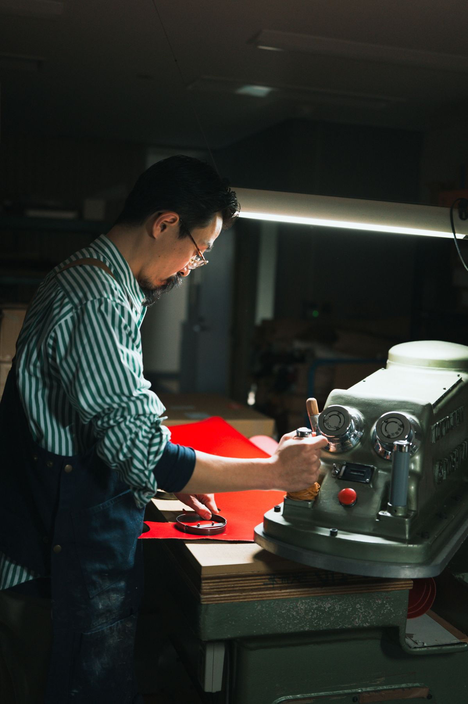

CRAFTSPERSON
職人採用／職人養成
専属の職人として、革小物の製造をしていただきます。未経験でも安心の研修があり、生産の基礎から学んで職人としての独立をめざせます。
- 研修場所
- 本社（東上野）または栃木営業所
- こんな方に
- ものづくりが好きな方／手に職をつけたい方
トップ / 採用情報
RECRUIT
20代から70代まで、それぞれの手が工房を支えています。会社を一緒に支えてくださる方を募集しています。どんな不安も、一緒に相談しながら乗り越えていきましょう。

Jobs
CRAFTSPERSON
専属の職人として、革小物の製造をしていただきます。未経験でも安心の研修があり、生産の基礎から学んで職人としての独立をめざせます。
PART-TIME
工房で、革小物の製造に携わっていただきます。
HOME-BASED
ご自宅で、糊付けなどの簡単な作業をしていただきます。慣れないうちは、営業所で30分ほど説明を受けていただきます。
Training
Entry
お問い合わせフォームで「採用について」を選んでご連絡ください。お電話でも受け付けています。工房の見学のご相談もどうぞ。確認：見学を受けるか